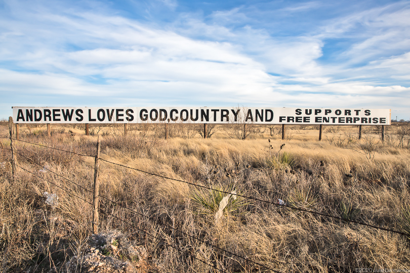

Andrews, TX 1992 – 2010

A banner seen at the city line. © Julie Dermansky, DeSmog
Andrews is a small, remote town on the plains near the border with New Mexico. Friday night football, oil, and church are pretty much the name of the game. It is hundreds of miles away from the nearest city of any sort of national significance, but the region as a whole punches above its weight economically because of the scale of oil and gas production that goes on there. It's a city that never sleeps, with the drone of semi trucks and the low, steady clang of oil pumpjacks filling the air all through the night.